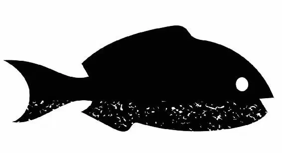

At the loading dock inside Quarantine, workers lined up tanks of fish, preparing to load them onto the transport truck.
Dory and Nemo swam out of the pipes and into one of the tanks. They helped pull Marlin through the vent and immediately surveyed their surroundings. They could see everything in the room through the tank’s glass.
Dory gasped when she saw a tank of blue tangs at the opposite end of the room, lined up and ready to be loaded onto the moving truck!
“MY FAMILY! C’mon, let’s go!” shouted Dory. She leapt from tank to tank, forcing Marlin and Nemo to follow her. “I’m coming, Mommy ... I’m coming, Daddy!”
But just as they were about to dive into the tank of blue tangs, the staffers lifted it away! The friends hit the glass and fell into a mop bucket on the floor.
Before they could think of what to do next, three octopus arms reached into the bucket and lifted them out. They screamed in terror and then gasped for breath.
Thankfully, the octopus arms belonged to Hank! He quickly put the friends in a coffeepot full of water.
Dory quickly introduced Hank to Marlin and Nemo, then rushed into the task at hand. “Hank, we need to get in that tank,” said Dory. “That rhymed.”
“Why?” asked Hank.
“Her parents are there!” said Nemo.
Hank sighed and carried them toward the tank of blue tangs. He was worried they wouldn’t make it in time.
“Look, you’ve got three minutes to get everyone in here with you, got it?” asked Hank.
“Got it,” said Dory.
Hank dumped Dory, Nemo, and Marlin in with the rest of the fish. Twenty blue tangs — all wearing tags — turned and looked at them, surprised.
“Oh, boy,” said Dory, taking a deep breath. “Mom? Dad? Oh, boy. Hey, everyone. It’s me, Dory!”
The blue tangs murmured with surprise. “Dory? Is it really her? You mean the little forgetful fish?”
“Mom? Dad?” Dory said, looking around, swimming and searching each face. “Where are my parents?” she asked.
The blue tangs lowered their eyes and looked at one another awkwardly. Finally, one of them broke the uncomfortable silence. “Dory? Are you really Jenny and Charlie’s girl?”
“Yes, I am! Where are they?”
“Well, right after you disappeared, they thought you must have ended up in Quarantine.”
Outside the tank, staffers started loading tanks onto the truck. Hank was getting antsy. “C’mon, c’mon, c’mon,” he said to himself.
“And so they came here to look for you, and —”
“They’re here? Where are they?” she shouted, looking around wildly.
“Dory, that was years ago,” the fish explained.
“Years ago?” asked Dory.
Marlin looked down. “Oh, no,” he said quietly.
“You see, Dory ... when fish don’t come back from Quarantine, it means ... they’re not ...” The blue tang tried to figure out a kind way to say it. He had hoped that Dory would understand, but she didn’t seem to be getting it.
“Dory,” Marlin said softly. “They’re gone.”
Dory’s vision became blurry and a lump formed in her throat. “They’re ... dead?” she asked in disbelief.
“They wanted to find you —” said another blue tang.
“Are you sure they’re gone?” asked Nemo.
“Dory, listen, it’s going to be okay,” offered Marlin.
“They loved you so much,” said another blue tang.
Hank knocked on the glass and leaned over the top of the tank. He pointed at the workers loading the tanks onto the truck. “Anyone not looking to go to Cleveland, final warning!”
Nemo and Marlin tried to comfort Dory, but she wasn’t very receptive.
“I was too late,” said Dory sadly.
“Dory, no ... Now listen,” started Marlin.
“I don’t have a family,” she said, on the verge of tears.
“No, that’s not true,” said Nemo.
“Time to go!” Hank shouted as he watched the forklift slip beneath the blue tang tank.
Dory slowly backed into the coffeepot. “I’m ... I’m all alone,” she said.
One second before the tank was lifted, Hank yanked up the coffeepot. “Where is everybody else?” he asked. Behind him, the tank was lowered onto the truck. “Your orange friends are on their way to Cleveland!” said Hank.
Suddenly, a giant hand grabbed Hank and he dropped the coffeepot. “Aha! I found the octopus!” said a female staffer.
Hank slapped at her with one of his tentacles until she released him into a nearby tank. He instantly camouflaged himself. “Ugh. Where did he go?” she said, annoyed.
From the tank, Hank watched in horror as Dory spilled out onto the floor and down a drain marked to ocean.
